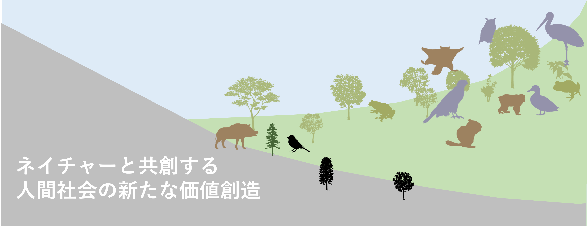

生物多様性ビッグデータで企業価値を高める

生物多様性に関する国際的要請に応え，新たなビジネスチャンスを創造する
「ネイチャーの劣化は人間社会に対する経済的なリスクである」という国際的合意を背景に， 自然関連財務情報開示タスクフォース（TNFD）が発足しました。 企業は，この要請に応えることで，新たな事業機会や国際連携のチャンスを広げることができます。 シンクネイチャーは，農林水産，製造，運輸などあらゆる業種に対応した科学的な分析ツールを保有します。
TNFDパイロット分析事例はこちらTNFD対応において国際的な基準を満たすためには、業種や業務形態に依存して、様々な指標やツールを適切に用いる必要があります。 したがって、ネイチャーに関する知識を要した社内人材の育成が不可欠です。 シンクネイチャーは，国際枠組みに対応した報告書の作成ノウハウや，社内人材育成プログラムを提供します。
人材教育プログラム情報はこちら日本の多くの企業は，ネイチャーを保全・再生させる活動を独自で実施することで，社会の持続可能性を高めることに寄与してきました。 しかし，心血を注いだ事業であっても，科学的な数値評価を行えないことから，企業価値に反映されにくいという課題がありました。 シンクネイチャーは，庭木の植栽や、森林整備事業、里山管理など、民間主導による生物多様性再生・保全事業、すなわちネイチャーポジティブ事業の価値を数値評価します。 さらに，国際課題をバックキャスティングした事業の最適設計により，予算など様々な制約のもとでのネイチャー関連事業の効果を最大化させるアイデアも提案。 一歩先の技術で，あなたの企業価値を高めるお手伝いをします
これまでに実施した事業の解説記事
受注実績
return to top